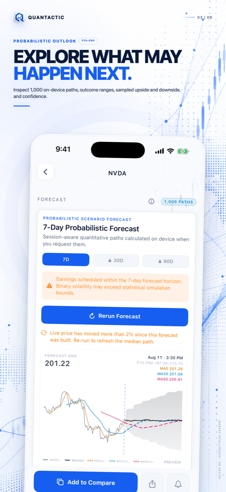
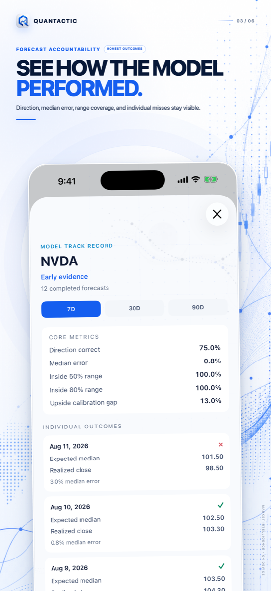
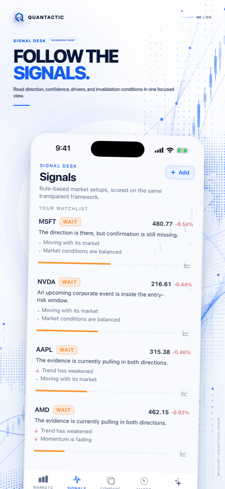
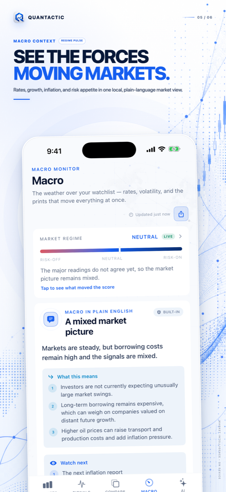
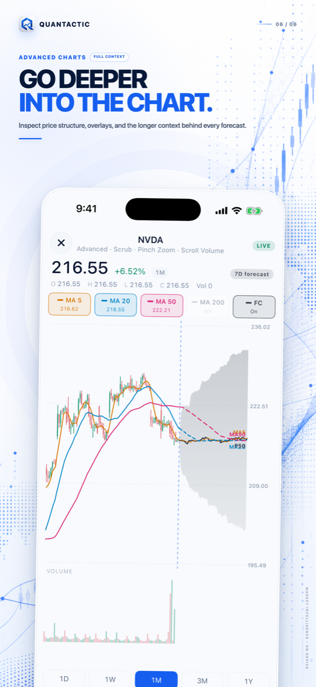

QUANTACTIC 1.3 · PRIVATE BY DESIGN
See the market clearly.
Keep the evidence.
A private market desk for iPhone—on-device AI, explainable signals, probabilistic forecasts, macro context, and beautiful research cards in one calm workflow.
iPhone · iOS 26 or later · No account or brokerage connection required
PROBABILISTIC, NOT PREDICTIVE
Explore the range. Then audit the model.
Inspect sampled 7-, 30-, and 90-day scenarios, then review completed forecasts against real outcomes. Direction accuracy, median error, range coverage, and individual misses remain visible.



SIGNALS THAT SHOW THEIR WORK
Know what supports the setup—and what breaks it.
Rule-based signals keep direction, confidence, measured drivers, risk context, and invalidation conditions together. No black box and no invented catalyst.
ONE RESEARCH DESK
Macro context and chart depth, without the clutter.
Keep rates, volatility, oil, the U.S. dollar, economic events, candles, volume, moving averages, support, resistance, and forecast overlays within reach.


QUANTACTIC PRO
More depth. No rewarded-ad gates.
Pro unlocks unlimited 7-day forecasts, complete 30- and 90-day scenarios, deeper model evidence, expanded private AI, and higher research limits.
Full forecasts
Unlimited 7-day runs plus complete 30- and 90-day probability ranges.
Model accountability
Track direction, error, range coverage, and individual outcomes over time.
Deeper evidence
Inspect more signal detail, risk context, and invalidation conditions.
Private AI
Ask more guided market questions on supported Apple Intelligence devices.
Free users receive one 7-day forecast per local day. Additional 7-day runs are an explicit choice: watch one rewarded ad or upgrade to Pro. Ads never appear during page navigation.
Save about 33% · Best value
Straight answers before you download.
Does Quantactic place trades?
No. Quantactic does not connect to brokerage accounts, execute trades, accept deposits, or manage investments.
Are forecasts guaranteed predictions?
No. Forecasts are probabilistic scenarios derived from historical market behavior. They are not price targets, trading instructions, or guarantees.
What stays on my iPhone?
Watchlists, preferences, forecast records, and supported Apple Intelligence conversations are stored locally as described in the privacy policy. Market data, news, purchases, and ads require network services.
When do free users see an ad?
Only after the free daily 7-day forecast has been used and the user explicitly chooses a rewarded ad for one additional run. There are no navigation ads.